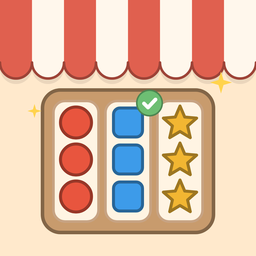

Sort Shop
A cozy sorting puzzle where every solved shelf helps bring Main Street back to life.
Need help?
Email us at powercore.game.studio@gmail.com. We usually reply within two business days.
If you found a bug, tell us your phone model and the level number, and what happened. A screenshot helps a lot.
Questions
Is Sort Shop free?
Yes. Sort Shop is free to play. Gem packs and Remove Ads are optional purchases.
I bought Remove Ads. How do I get it back on a new phone?
Sign in with the same Apple ID, then tap Restore purchases in the Shop or in Settings. Gems are used up when spent, so they can't be restored, but they come back with your progress if you restore your phone from a backup.
Do I need an internet connection?
No. Every level, the Daily Shelf and Main Street work offline.
How do I keep my progress on a new phone?
Your progress is saved on your phone and included in your phone's own backups.
- iPhone: keep iCloud Backup on (Settings › your name › iCloud › iCloud Backup), then set up your new iPhone from that backup.
- Android: keep Google backup on (Settings › Google › Backup). Your progress comes back when you set up a new phone from that backup or reinstall the game.
I'm stuck on a level.
Use Undo to step back, Restart to try again, or Hint for a suggested move. Every level can be solved.
Why are there ads?
Ads keep Sort Shop free. You'll see a short ad between some levels, never in your first session, and you can choose to watch a video for an extra hint or an extra shelf.
How do I change my ad choices?
On iPhone, go to Settings › Privacy & Security › Tracking. In Europe, the UK and Switzerland, open Sort Shop's Settings › Privacy choices. See the Privacy Policy for what the ads collect.
What are stars for?
Each level gives 1 to 3 stars. Spend them on Main Street to fix up the shops. Replaying a level for more stars counts too.